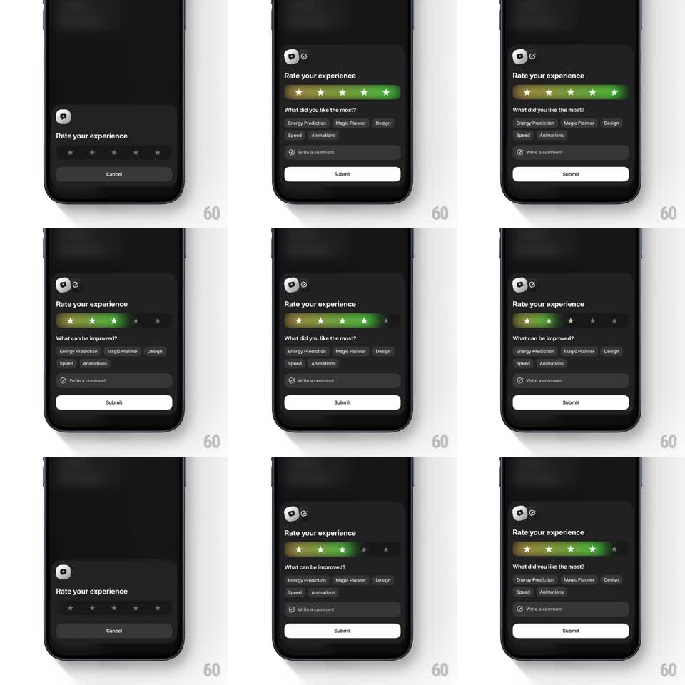

Media
Frame-by-frame

Rebuild this interaction 1:1: Exoplan's rating sheet - five stars sit on a glowing gradient bar that fills from red to green as the rating rises, and the sheet morphs to reveal contextual feedback chips ("What did you like the most?" for high ratings, "What can be improved?" for low), a comment field, and a Submit button.

Rebuild this interaction 1:1: Exoplan's rating sheet - five stars sit on a glowing gradient bar that fills from red to green as the rating rises, and the sheet morphs to reveal contextual feedback chips ("What did you like the most?" for high ratings, "What can be improved?" for low), a comment field, and a Submit button.
## Integration
Integration: stack-agnostic spec - springs given as stiffness/damping, timed motions as duration + curve; map every value to your framework and animation library of choice.
## Scene
Dark sheet over a dimmed screen: app icon, "Rate your experience" title, and a star row on a rounded gradient track. Initial state has empty stars and only a Cancel button. After rating: a chip cloud (Energy Prediction, Magic Planner, Design, Speed, Animations), a "Write a comment" field, and a Submit button.
## Motion spec
Pattern: gradient-fill star slider + adaptive sheet morph.
- Star fill: dragging or tapping across stars sweeps the track's gradient fill to the selected star (fill animates 250ms, ease-out), the track's hue shifting red -> yellow -> green with the rating; filled stars glow.
- Sheet morph: on first selection the sheet grows (spring ~300/22) as the chips header cross-fades to match the rating ("What did you like the most?" for 4-5 stars, "What can be improved?" for 1-3), chips stagger in (40ms, fade + 8px rise), and Cancel swaps to Submit (150ms label cross-fade).
- Re-rating: changing stars re-sweeps the gradient and flips the chips header copy if the rating crosses the threshold (200ms cross-fade; chips stay).
- Chip select: tapped chip fills with a light pill (150ms).
## Calibration
- The gradient is a continuous track fill, not per-star coloring.
- Chips header depends on the current rating, not the first rating given.
## Reduced motion
Gradient fill steps instantly; sheet content fades in (200ms) without growth spring.
## Don't miss
- Empty state shows only Cancel; Submit appears only after a rating exists.
- Keep the glow subtle - a soft bloom on filled stars and the track, not a neon outline.